Kornis Mihály
Az 1956-os forradalom utáni megtorlás
Forradalmi Munkás-Paraszt Kormány
1956 őszén, a forradalom leverését követően Kádár János vezetésével november 4-én Szolnokon megalakult a Forradalmi Munkás-Paraszt Kormány,
amely hivatalosan is átvette a hatalmat. A Kádár-kormány szovjet katonai támogatással lépett fel,
miután Kádár bejelentette, hogy a „rend helyreállítása” érdekében a szovjet csapatok bevonulását kérte.
Ezzel párhuzamosan a forradalom vezetői közül többen – például Nagy Imre és munkatársai – a jugoszláv követségen kerestek menedéket,
míg Mindszenty József bíboros az amerikai követségre menekült.
Annak ellenére, hogy Nagy Imre nem mondott le a miniszterelnöki tisztségről, az Elnöki Tanács elnöke,
Dobi István 1956. november 7-én Kádár Jánost nevezte ki miniszterelnöknek. A hatalomgyakorlás központi szereplőivé
ideiglenesen a munkástanácsok váltak, köztük a Nagy-budapesti Központi Munkástanács, amely november 14-én alakult meg Bali Sándor és Rácz Sándor vezetésével.
Munkásőrség, Nagy Imre elfogása
Kádár kezdetben ígéretet tett arra, hogy a forradalomban részt vevők nem számíthatnak retorziókra. Ennek ellenére, miután Nagy Imre
és társai a kormány írásos garanciáira hivatkozva elhagyták a jugoszláv követséget, szovjet közreműködéssel elfogták őket,
és Romániába, Snagovba szállították. Ezzel párhuzamosan az értelmiség is aktívan tiltakozott: Kodály Zoltán kezdeményezésére
november 23-ára néma tiltakozást szerveztek, amely során az emberek egy órára elvonultak otthonaikba, így fejezve ki elégedetlenségüket.
A rendszer fokozatosan kiépítette a megtorlás eszközrendszerét. A volt ÁVH-sokból Münnich Ferenc
vezetésével megszervezték a Magyar Forradalmi Honvéd Karhatalmat, ismertebb nevükön a „pufajkásokat”,
majd 1957 tavaszán megalakult a Munkásőrség. A párt hivatalos álláspontja 1956 decemberére véglegessé vált:
a felkelést ellenforradalomnak minősítették, és a résztvevőket nyugatbarát, fasiszta elemeknek bélyegezték.
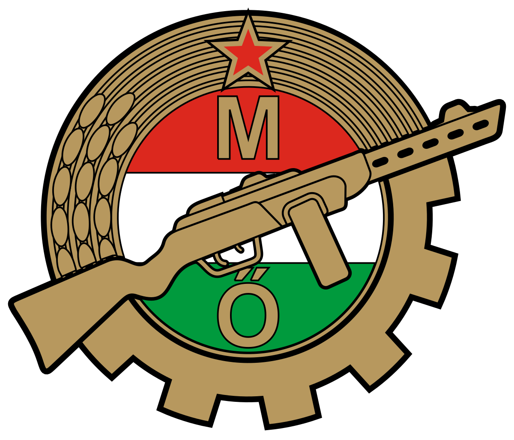
Statárium
1956. december 11-én kihirdették a statáriumot, és ezzel kezdetét vette az átfogó megtorlás. Kádár mellett Biszku Béla játszott vezető szerepet ebben a folyamatban.
Tízezreket tartóztattak le, visszamenőlegesen hozott törvények alapján. Felállították a Legfelsőbb Bíróság Népbírósági Tanácsát,
amelynek ítéletei ellen fellebbezésnek nem volt helye. Mintegy 20 000 embert börtönöztek be, 13 000 főt internáltak, körülbelül 400 halálos
ítélet született, melyek közül 229-et végre is hajtottak. Az áldozatok között volt
Angyal István és Mansfeld Péter is – utóbbi mindössze 18 évesen, fiatalkorúsága miatt elhalasztott kivégzése után vesztette életét.
Nagy Imre per
A Nagy Imre és társai elleni per előkészítése és lebonyolítása Moszkva tudtával és jóváhagyásával történt. A zárt ajtók mögött zajló
tárgyalásokat koncepciós eljárásként értékelik. A védelem számára kulcsfontosságú tanúk – köztük Kádár, Münnich vagy
Apró Antal – nem jelentek meg a bíróság előtt. Az ítéletet 1958. június 16-án hajtották végre,
Nagy Imrét, Maléter Pált és Gimes Miklóst kivégezték. Ugyanezen a napon jelentették be Szilágyi József és Losonczy Géza halálát is,
noha Szilágyit már áprilisban kivégezték, Losonczy pedig börtönben halt meg.
A kivégzettek holttestét jeltelen sírokban temették el az Újköztemető 301-es parcellájában, arcukkal lefelé, szögesdróttal átkötve,
a családokat kizárva a temetésből is. A sírok adminisztrációjában hamis neveket tüntettek fel. Az 1956-os forradalom témája évtizedekre tabuvá vált a hivatalos közbeszédben.
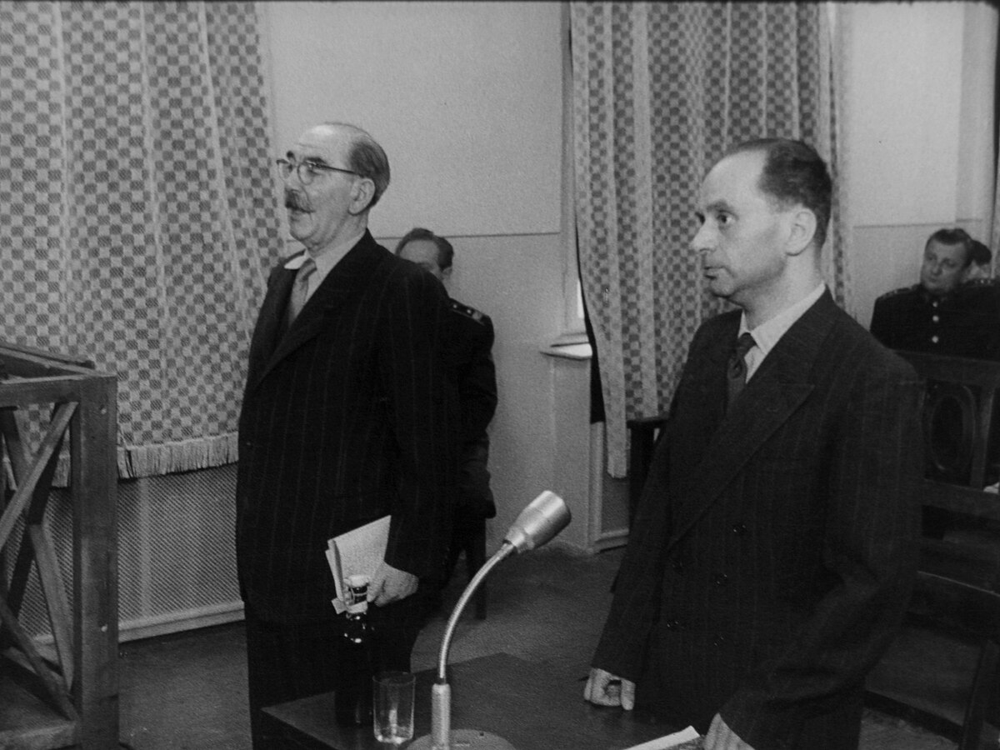
Kádári konszolidáció
KISZ, amnesztia
A Kádár-rendszer politikai stabilizálását követően sor került a hatalom ifjúsági és karhatalmi bázisának újjászervezésére.
A korábbi DISZ helyére létrehozták a KISZ-t (Kommunista Ifjúsági Szövetség), a karhatalmi erőket a Munkásőrség formájában állították fel,
a hadsereg szerkezetét pedig racionalizálták, többek között a sorkatonai szolgálat idejének csökkentésével.
A forradalom nemzetközi utóéletének lezárása érdekében az ENSZ felé tett gesztusként 1963-ban részleges amnesztiát hirdettek.
A társadalom konszolidációját és az életszínvonal növelését célzó reformok fokozatosan váltak érzékelhetővé, különösen a mezőgazdaságban és az iparban.
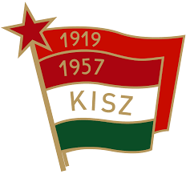
mezőgazdaság, ipar
A mezőgazdaságban eltörölték a beszolgáltatási rendszert, modernizált mintagazdaságokat hoztak létre, és támogatást kaptak a
háztáji gazdaságok, amelyek a második gazdaság alapját képezték. A termelés technológiai szintje emelkedett: elterjedt a gépesítés,
a műtrágyázás és a növényvédelem. A konzervipar és a szörpgyártás fellendüléséhez a bogyós gyümölcsök termesztésének növekedése járult hozzá.
Új élelmiszeripari termékek, például a Túró Rudi is megjelentek a piacon.
Az ipari szektorban bővült a bauxit- és timföldkitermelés, ugyanakkor a feldolgozás túlnyomó részét a Szovjetunió végezte.
Magyarország kész alumíniumtermékeket kapott cserébe. A hatvanas években elindult a műanyaggyártás, és 1965-ben átadták a Dunai Kőolajfinomítót.
A kőolaj és földgáz importja a KGST-n belül kedvezményes feltételekkel történt.
A könnyűipar nagy mennyiségű, de jellemzően gyengébb minőségű termékeket állított elő. Ugyanakkor megkezdődött a farmergyártás,
amely a szocialista blokkban egyedülállónak számított. A kereskedelem központjai az újonnan nyitott bevásárlóközpontok – például a Skála és a Sugár Áruház – lettek.
Új gazdasági mechanizmus
A mezőgazdaságban eltörölték a beszolgáltatási rendszert, modernizált mintagazdaságokat hoztak létre, és támogatást kaptak a
háztáji gazdaságok, amelyek a második gazdaság alapját képezték. A termelés technológiai szintje emelkedett: elterjedt a gépesítés,
a műtrágyázás és a növényvédelem. A konzervipar és a szörpgyártás fellendüléséhez a bogyós gyümölcsök termesztésének növekedése járult hozzá.
Új élelmiszeripari termékek, például a Túró Rudi is megjelentek a piacon.
Az ipari szektorban bővült a bauxit- és timföldkitermelés, ugyanakkor a feldolgozás túlnyomó részét a Szovjetunió végezte.
Magyarország kész alumíniumtermékeket kapott cserébe. A hatvanas években elindult a műanyaggyártás,
és 1965-ben átadták a Dunai Kőolajfinomítót. A kőolaj és földgáz importja a KGST-n belül kedvezményes feltételekkel történt.
A könnyűipar nagy mennyiségű, de jellemzően gyengébb minőségű termékeket állított elő. Ugyanakkor megkezdődött a
farmergyártás, amely a szocialista blokkban egyedülállónak számított. A kereskedelem központjai az
újonnan nyitott bevásárlóközpontok – például a Skála és a Sugár Áruház – lettek.
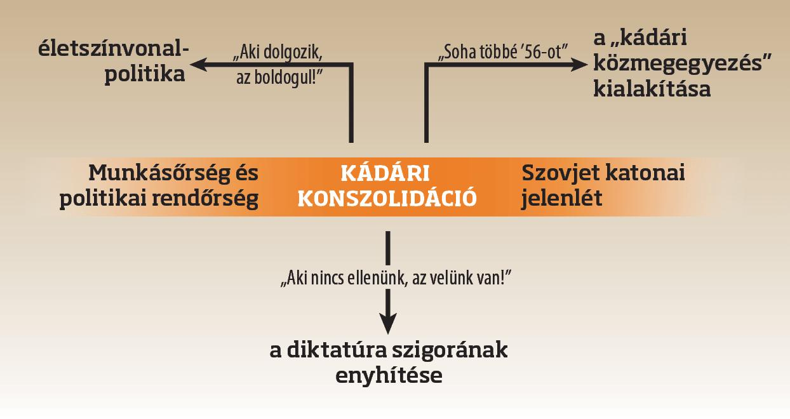
Oktatás, közlekedés, lakásépítési program, életszínvonal, TTT
Az oktatási rendszerben az 1961-es törvény a tankötelezettséget 16 évre emelte. A kisiskolák összevonása és az iskolakörzetesítés révén a
nagyobb települések oktatási intézményei bővültek. A gimnáziumokban elérhetővé vált a második idegen nyelv tanulása. A technikumok helyett
szakközépiskolák jöttek létre, ahol az érettségivel együtt szakmai képzettség is megszerezhető volt.
A közlekedés jelentős fejlődésen ment keresztül. A metróépítést befejezték, a közúthálózat bővítésével pedig elérhetővé vált a települések 96%-a.
Megépültek az első autópálya-szakaszok (M1, M3, M5, M7). A járműiparban Magyarország elsősorban autóbuszokkal
(Ikarus) és motorkerékpárokkal (Pannónia) látta el a KGST-piacot. A légi közlekedés fejlődését Ferihegy 2 termináljának megépítése
és a Hungaroring létrehozása is jelezte.
Lakásépítési program keretében mintegy egymillió lakás épült, főként panelházak formájában. A lakótelepekhez kapcsolódóan oktatási,
kereskedelmi és egészségügyi intézmények is létrejöttek. Az életszínvonal látszólag emelkedett, azonban ezzel párhuzamosan csökkent a
várható élettartam, nőtt az öngyilkosságok és válások aránya. A gyermekvállalási kedv csökkenését csak ideiglenesen enyhítette a GYES bevezetése 1967-ben.
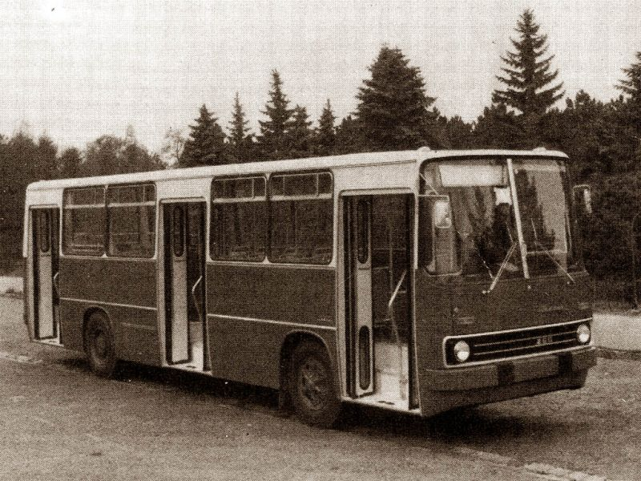
A korszak ideológiai kereteit a marxista–leninista tanok határozták meg. A kultúra, a média és az oktatás e keretrendszer szerint működött.
A kultúrpolitika irányítását Aczél György végezte, aki a „tilt, tűr, támogat” elv alapján osztályozta a művészeti és irodalmi tevékenységeket.
A cenzúra jelen volt a könyvkiadásban, zenében, sőt gyermekirodalomban is. A nyugati fogyasztói kultúra elemei – például a
farmernadrág, a miniszoknya vagy a hosszú haj – kezdetben elutasításra találtak, később azonban a fiatalok békés ellenállásának szimbólumaivá váltak.
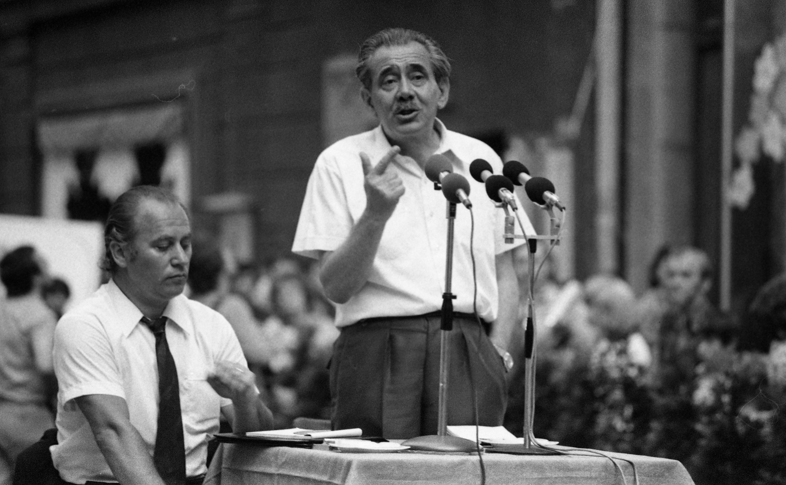
Új termékek, televízió, vallás
A hazai ipar igyekezett nyugati termékeket másolni, így születtek olyan sikeres hazai márkák, mint a Tisza cipő vagy a Rubik-kocka.
A szabadidős tevékenységek közül népszerűek voltak a szakszervezeti üdülések, a hétvégi telkek, valamint a háztartási gépekkel felszerelt otthonok.
A televízió elterjedésével új lehetőségek nyíltak a propaganda terjesztésére. Közönségkedvenc műsorok
indultak (pl. Ki mit tud?, Mézga család), és megjelent a kabaré mint a társadalmi
feszültségek levezetésének eszköze, ennek legismertebb szereplője Hofi Géza volt.
Az egészségügyi rendszer alulfinanszírozottsága miatt elterjedt a hálapénz intézménye.
A társadalmi kontrollt továbbra is biztosították az ügynökhálózatok. Az 1956-os forradalom résztvevői
gyakran megfigyelés alatt álltak, és csak korlátozott munkalehetőségekhez juthattak.
A disszidens tevékenységeket propagandisztikus eszközökkel kriminalizálták, gyakran negatív szereplőkként ábrázolva őket a médiában.
A vallásosság háttérbe szorult, bár az állam és az egyház közötti viszony a hetvenes évektől
részben normalizálódott. Mindszenty József 1971-ben elhagyhatta az országot, és 1974-től Lékai László révén tárgyalások kezdődtek a Szentszék és a magyar állam között.
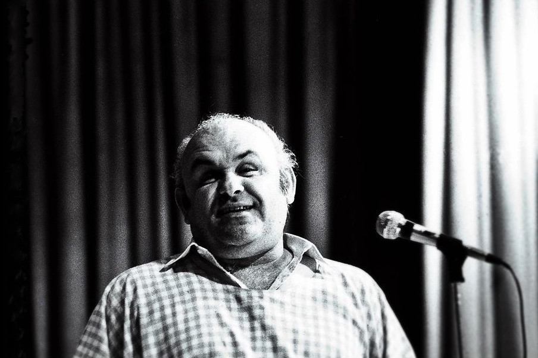
Kádár-rendszer válsága és a rendszerváltozás
Gazdasági, politikai és társadalmi válság
Az 1968-ban bevezetett új gazdasági mechanizmus célja a gazdaság hatékonyságának javítása volt, de már a
kezdetektől komoly belső ellenállásba ütközött az MSZMP-n belül. A reformellenes irányvonalat Biszku Béla és
Komócsin Zoltán képviselte, akiket a Szovjetunió – különösen a Brezsnyev-féle neosztálinista vezetés – is támogatott.
A reformintézkedések 1972-re visszaszorultak, az 50 legnagyobb vállalat ismét állami irányítás alá került,
az Állami Tervbizottság felállításával pedig újra a központi tervezés került előtérbe.
A káderkiválasztásban ismét a politikai megbízhatóság vált elsődlegessé, a reformerek pozícióvesztése 1975-re teljessé vált.
Prágai tavasz, olajrobbanás
A külpolitikai környezet sem kedvezett a reformok folytatásának. Magyarország részvétele az 1968-as prágai
tavasz leverésében rontotta nemzetközi megítélését. A hetvenes évek olajárrobbanása, valamint a nyersanyagimport világpiaci árhoz
kötése tovább rontotta az ország gazdasági helyzetét. Az exporttermékek cserearánya jelentősen romlott, miközben a teljes foglalkoztatottság
fenntartása érdekében nem volt lehetőség a piacgazdaságokban alkalmazott megszorításokra. Ezért Kádár nyugati hitelek felvételébe kezdett,
Fekete János támogatásával. Az adósságállomány 1970 és 1989 között 0,8 milliárd dollárról 22 milliárdra nőtt,
az ország adósságspirálba került, amit a lakosság előtt eltitkoltak.
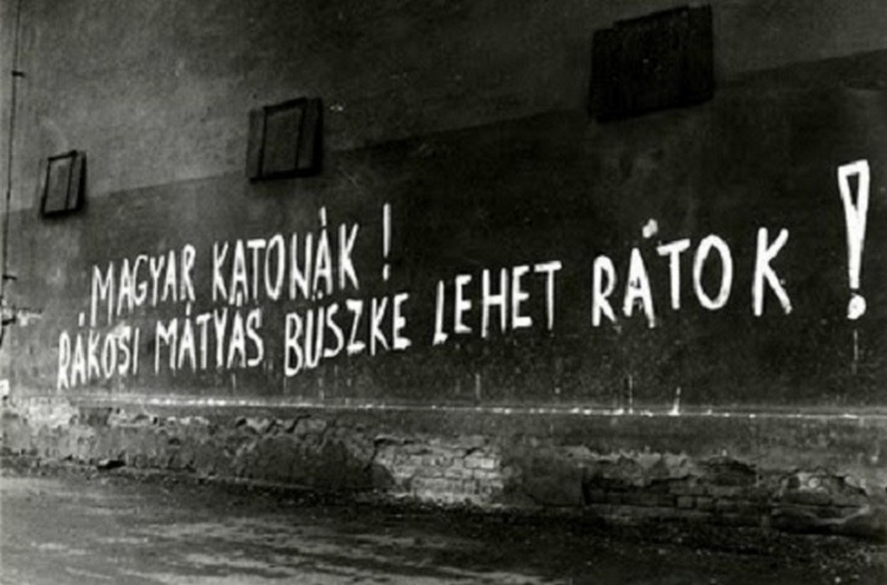
Az energiaimport csökkentésére tett kísérletek – például a szénkitermelés növelése vagy a bős–nagymarosi vízlépcső
terve – nem hoztak eredményt. Az építkezéseket ökológiai és társadalmi tiltakozások hatására leállították.
Az 1970-es évek végére a politikai vezetés felhagyott az életszínvonal emelésének szándékával,
és az 1968-as reformoknál is radikálisabb gazdasági lépéseket vezetett be: az árak liberalizációjával a
termékek 70%-a szabadárassá vált, ami inflációhoz vezetett. A kenyér ára például 1980 és 1990 között több mint nyolcszorosára nőtt.
Reformok
A gazdaság működtetésére új formákat vezettek be. A második gazdaság szerepe megerősödött, nemcsak a háztáji gazdálkodásban,
hanem a vállalatokon belül is, VGMK-k és GMK-k formájában. Az emberek többsége részt vett ezekben a tevékenységekben.
A reformokat a nyolcvanas évektől Moszkva sem akadályozta, különösen Brezsnyev halála után. Magyarország 1982-ben belépett a
Világbankba és az IMF-be, ami a keleti blokkban példátlan lépés volt. A gazdasági reformokat 1987-ben tovább mélyítették:
bevezették a személyi jövedelemadót és a társasági törvényt, lehetővé téve az állami vállalatok privatizációját, akár külföldi befektetők számára is.
Ennek ellenére Magyarország lett a szocialista országok közül a legeladósodottabb,
az egy főre jutó államadósság itt volt a legnagyobb. A szovjet befolyás gyengülése,
valamint a gazdasági válság hatására a politikai rendszer is megrendült. Bár propagandisztikus
sikereket mutattak fel – például Farkas Bertalan 1980-as űrrepülése – a vezetés képtelen volt a válság kezelésére.
Kádár leváltása, ellenzéki értelmiség
A demokratikus ellenzék a prágai tavasz leverése után nem hitt a nyílt forradalom lehetőségében,
inkább alternatív nyilvánosság kialakítására törekedett szamizdat kiadványokkal. A legismertebb ezek közül a Beszélő volt.
A szimbolikus ellenállás egyik fontos eleme az István, a király című rockopera lett. Az ellenzék főként fiatal értelmiségieket,
egyetemistákat szólított meg, akik szakkollégiumokba szerveződve kerülték ki a KISZ-t.
Több ellenzéki kezdeményezés szervezett megemlékezéseket (pl. március 15., október 23.),
amelyeket a rendőrség rendszeresen feloszlatott. 1985-ben Monoron zajlott az első ellenzéki értelmiségi
találkozó, 1987-ben kidolgozták a Társadalmi Szerződést, majd megalakultak az első független politikai szervezetek:
az MDF, az SZDSZ, a FIDESZ, a KDNP és az FKgP. Elindult a Történelmi Igazságtétel Bizottság is.
A reformszárny az MSZMP-n belül újra megerősödött, Pozsgay Imre, Nyers Rezső és Szűrös Mátyás vezetésével.
1988-ban Kádárt leváltották, helyét Grósz Károly vette át. 1989 januárjában Pozsgay Imre az 1956-os eseményeket hivatalosan is népfelkelésnek nevezte.
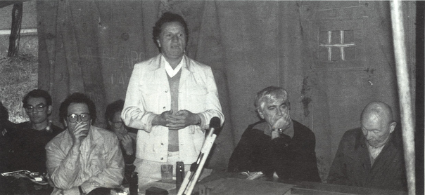
Kádár halála
1989. július 6-án Kádár János elhunyt, ugyanazon a napon, amikor a Legfelsőbb Bíróság hivatalosan kihirdette
Nagy Imre és mártírtársai jogi rehabilitációját.
Az időzítés szimbolikus jelentőségűvé vált. A bírósági tárgyaláson jelen lévők között egy papírlap
kezdett körbejárni, rajta a rövid, de súlyos tartalmú üzenet: „Meghalt Kádár János.”
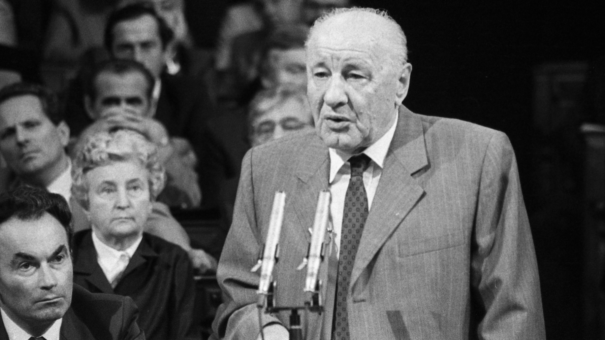
Rendszerváltás
A rendszerváltás intézményi kereteit a Nemzeti Kerekasztal-tárgyalások alakították ki, amelyet az MSZMP,
az Ellenzéki Kerekasztal és társadalmi szervezetek folytattak. Ennek során elfogadták az egyesülési,
a sztrájk- és a népszavazási törvényt, az alkotmánymódosítást, a többpártrendszert és az Alkotmánybíróság létrehozását.
A tárgyalások során született megállapodás alapján Nagy Imrét és mártírtársait 1989. június 16-án ünnepélyesen újratemették.
Ezzel egy időben hatályon kívül helyezték az 1958-as ítéleteket, az érintetteket bűncselekmény hiányában rehabilitálták.
1989 őszére a pártállam szétesett. Beindult a spontán privatizáció, amely során elsősorban a korábbi
pártvezetés tagjai jutottak jelentős vagyonelemekhez. Magyarország külpolitikai nyitása is felerősödött:
George Bush amerikai elnök hivatalos látogatást tett az országban, míg augusztus 19-én, a
Páneurópai Piknik során több száz keletnémet állampolgár menekült Ausztriába.
Szeptember 10-én a magyar kormány hivatalosan megnyitotta a
határt az NDK-s állampolgárok előtt, ezzel jelentős lökést adva a német újraegyesítésnek.
Az MSZMP 1989 októberi kongresszusán megalakult a Magyar Szocialista Párt (MSZP),
amely szociáldemokrata pártként határozta meg önmagát, de átvette az MSZMP teljes vagyonát és kapcsolatrendszerét.
Október 23-án Szűrös Mátyás kikiáltotta a harmadik Magyar Köztársaságot, ezzel lezárult a szocialista korszak, és megkezdődött a demokratikus átmenet.
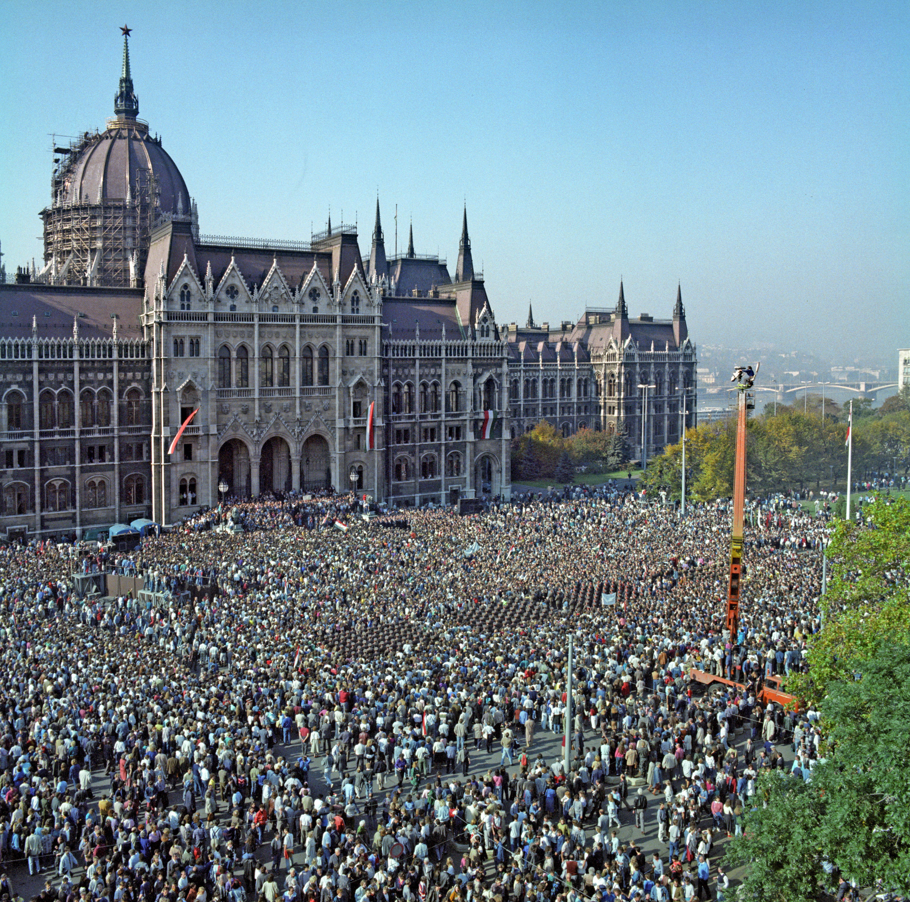
A harmadik Magyar Köztársaság kikiáltása